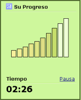

¿Cómo funciona?
TypingMaster analiza su progreso a tiempo real al realizar los ejercicios.
Si escribe con precisión y fluidez, el programa le sugerirá que salte al siguiente y le permite completar el ejercicio en menos tiempo.
Si parece que necesita práctica adicional, TypingMaster le permitirá completar el ejercicio totalmente.
Mejores resultados en menos tiempo
Gracias al Aprendizaje Optimizado, su práctica se adaptará totalmente a sus necesidades de aprendizaje. De este modo, se ahorrará ejercicios innecesarios. Su técnica también mejorará, ya que las dificultades se intentan resolver inmediatamente.